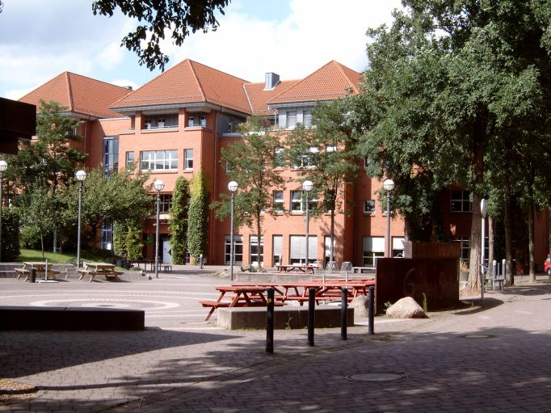
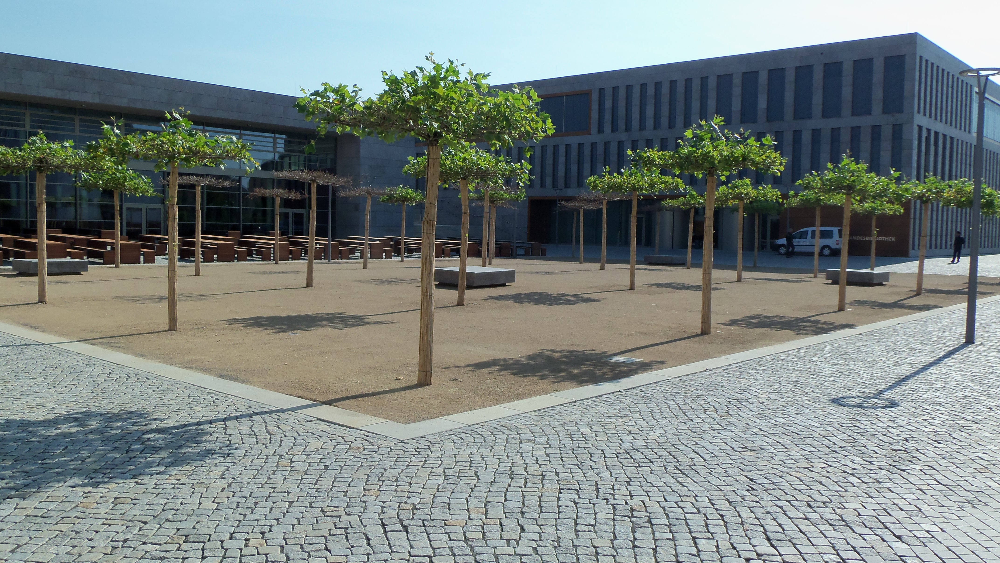
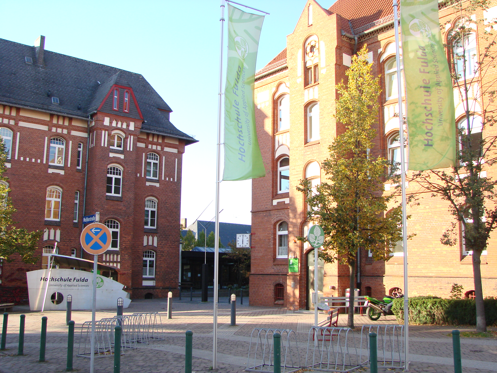

Menü

Über die Hochschule

Mitten in Deutschland, am Rand des Rhein-Main-Ballungsraumes, liegt die Stadt Fulda mit rund 65.000 Einwohnern verkehrsgünstig an den Nord-Süd-Verbindungen von Eisenbahn- und Autobahn-Linien. In der hübschen Barockstadt, die auch reichliche Freizeitmöglichkeiten bietet, ist der Wohnungsmarkt noch immer entspannter als in vielen anderen Städten.
Die Hochschule Fulda wurde 1974 als fünfte staatliche Fachhochschule des Landes Hessen eingerichtet. Bereits seit 1971 war sie Teilstandort der Fachhochschule Gießen. Die Vorläuferinstitution der Fuldaer Hochschule war das 1963 eröffnete Pädagogische Fachinstitut, das der Ausbildung von Lehrern in den musisch-technischen Fächern diente.

Trotz des zügigen Ausbaus auf acht Fachbereiche mit 140 Professorinnen und Professoren und rund 370 Mitarbeiterinnen und Mitarbeitern ist sie für
ihre rund 7.000 Studierenden überschaubar geblieben. Fulda ist die Hochschule der kurzen Wege.
Studierende können sich hier untereinander, sowie die Professorinnen und Professoren, gut kennenlernen.
Nach mehrjähriger Planungs- und Bauzeit wurden im Sommer die neuen Gebäude der Hochschulbibliothek, der Mensa und des Student Service Center (SSC) eingeweiht.
Mit den Fachbereichen Angewandte Informatik, Elektrotechnik und Informationstechnik, Lebensmitteltechnologie, Oecotrophologie, Pflege und Gesundheit, Sozial- und Kulturwissenschaften, Sozialwesen sowie Wirtschaft deckt die Hochschule Fulda ein breites Fächerspektrum ab.

Neben einer soliden, gesellschaftlichen und ökologischen Entwicklungen aufgeschlossenen Ausbildung der Studierenden wird in den Fachbereichen angewandte Forschung betrieben. Zahlreiche Forschungs- und Entwicklungsvorhaben werden gemeinsam mit osthessischen Unternehmen und anderen Institutionen durchgeführt.
Dieser Praxisbezug kommt nicht nur den Kooperationspartnern der Hochschule, sondern auch der Qualität von Forschung und Lehre zugute.
Aber die Hochschule Fulda ist nicht nur regional und national verankert, sondern auch international. Rund zwölf Prozent der Studierenden kommen aus dem Ausland; von Ägypten bis Vietnam, insgesamt aus über achtzig Ländern. Alle Fachbereiche unterhalten Kooperationen zu Partnerhochschulen weltweit.